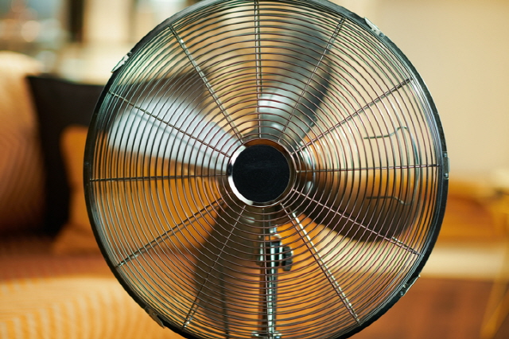
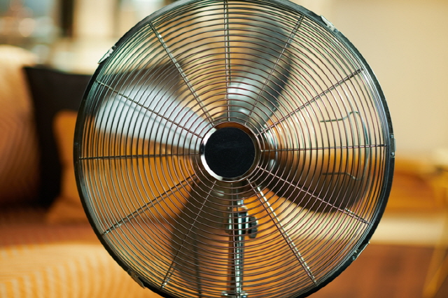

한국소비자원(원장 장덕진) 이 소비자가 선호하는 가정용 일반 선풍기 9개 브랜드, 15개 제품에 대해 풍량‧소음‧안정성 등을 시험‧평가한 결과 제품‧유형별로 풍량‧최대 풍속‧소음 등의 핵심 성능에 차이가 있는 것으로 나타났다.
풍량을 측정한 결과, 시험대상 제품은 최소 34.5~최대 78.6㎥/min 수준으로 제품 간 최대 2.27배 차이가 있었다. 신일전자 2개 제품이 풍량이 가장 높았다.
풍속이 빠를수록 바람을 더 멀리 보낼 수 있어 실내 공기순환·환기 측면에서 유리하다. 시험대상 제품의 최대 풍속은 최소 2.01~최대 4.30m/s로 르젠 2개 제품과 삼성(SFN-R35DXSB) 제품이 가장 빨랐다.
풍속을 가장 낮게 설정한 조건에서 시험대상 제품의 소음은 최소 20dB(A) 이하~최대 41dB(A)*로 차이가 있었고, 풍속을 가장 높게 설정한 조건에서 시험대상 제품의 소음은 최소 39 ~ 최대 50dB(A)로 차이가 있었다, 보국(BKF-2135F) 제품이 39dB(A)로 가장 조용했다.
단위 전력당 생산하는 풍량을 의미하는 에너지효율은 시험대상 제품별로 최소 0.82~최대 2.60(㎥/min)/W이었다. 한일(EBFL-214RTDC), 신일전자(SIF-T14PDD) 2개 제품이 2.59~ 2.60(㎥/min)/W로 가장 높은 수준이었다.